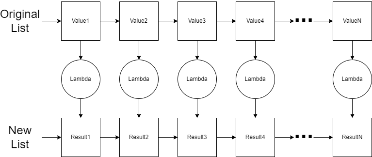
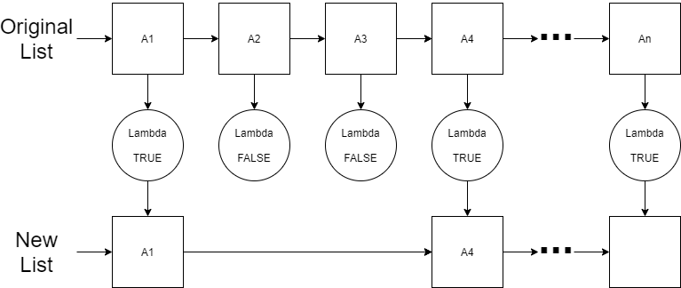

Chapter 4 - Higher Order Functions - Map and Filter
The map and filter are common functions that are available in programming languages to simplify the process of processing a loop. Frequently also simplified with a list comprehension syntax, these functions provide an introduction to a very common subset of functions Higher Order Functions. A Higher Order Function is a function that takes a function as a parmater or returns a function as a result.
4.1 Map
Let’s consider the map function first. The map converts a list to another list using a lambda function. The lambda function defines how to convert each item in the original list to an item in the resulting list.

If I wanted to double all the values in the list, I would use the following lambda function:
\(spec ~ ~ \lambda : : a \rightarrow a.\)
\(de\mathit{f} ~ ~ \lambda :: Value \rightarrow Value * 2.\)
\(\nonumber\)
If I wanted to square of all values in the list, I would use the following lambda function
\(spec ~ ~ \lambda :: a \rightarrow a.\)
\(de\mathit{f} ~ ~ \lambda :: Value \rightarrow Value * Value.\)
\(\nonumber\)
If I wanted to convert a list of strings to a list of string lengths, the lambda function would be (assuming you have a function called length):
\(spec ~ ~ \lambda :: string \rightarrow integer.\)
\(de\mathit{f} ~ ~ \lambda :: Text ~ ~ \rightarrow (length ~ ~ Text).\)
\(\nonumber\)
Notice that the map function is expecting that the lambda always have exactly 1 input parameter.
Here is the formal definition of the map:
\(spec ~ ~ \lambda :: a_1 \rightarrow a_2.\)
\(spec ~ ~ map :: \lambda ~ ~ [a_1]\rightarrow [a_2].\)
\(de\mathit{f} ~ ~ map :: \lambda ~ ~ [] \rightarrow [];\)
\(de\mathit{f} ~ ~ map :: \lambda ~ ~ [First | Rest] \rightarrow [(\lambda ~ ~ First)|(map ~ ~ \lambda ~ ~ Rest)].\)
\(\nonumber\)
First thing to notice is that the map function does rely on the definition for \(\lambda\). Also notice the recursive nature of the map as it applies the lambda function to each element one at a time starting with the first element (\(First\)). The result of (\(\lambda ~ ~ First\)) will be the new value that is placed in the resulting list.
Consider the code implementation in Erlang below.
Notice that the map function doesn’t know what the lambda will do except that it is a lambda that converts one value to another value. Note that Erlang also has a built-in function lists:map.
Problem Set 1
Starting Code: prove04_1/src/prove04_1.erl
- Implement the
mapfunction described above. - Using the
mapfunction you wrote, updatemap_2_testto use a simple cipher to encrypt a list of characters. The simple cipher should shift all characters by 1 per the ASCII table . For example, “PASSWORD” should be “QBTTXPSE”. In Erlang, a string is represented as a list of characters. Therefore, you can list notation with strings. Additionally, each character is treated as a number as shown in the ASCII table which means you can add numbers to letters. - Rewrite the
mapfunction using a list comprehension and call the new functionmap_listcomp.
4.2 Filter
The filter function converts a list to another list just like the map function. However, the lambda function used by filter is intended to return a boolean result that will be used to determine if the value in the original list will be included in the new list.

If I wanted to include only even number values in my list, then the lambda function would be as follows:
\(spec ~ ~ \lambda :: integer \rightarrow boolean\)
\(de\mathit{f} ~ ~ \lambda :: Value \rightarrow Value ~ ~ mod ~ ~ 2 == 0.\)
\(\nonumber\)
If I wanted to include only three digit numbers, then the lambda function would be:
\(spec ~ ~ \lambda :: integer \rightarrow boolean.\)
\(de\mathit{f} ~ ~ \lambda :: Value \rightarrow Value \ge 100 ~ ~ and ~ ~ Value \le 999.\)
\(\nonumber\)
In both of these examples above, the lambda function is expected to return a boolean condition. If it returns true, then the item will be included in the resulting list.
The formal definition of the filter is given below. The implementation is left for an exercise.
\(spec ~ ~ \lambda :: a \rightarrow boolean\)
\(spec ~ ~ \mathit{filter} :: \lambda ~ ~ [a] \rightarrow [a].\)
\(de\mathit{f} ~ ~ \mathit{filter} :: \lambda ~ ~ [] \rightarrow [];\)
\(de\mathit{f} ~ ~ \mathit{filter} :: \lambda ~ ~ [First | Rest] \rightarrow [First|(\mathit{filter} ~ ~ \lambda ~ ~ Rest)] ~ ~ \text{when} ~ ~ (\lambda ~ ~ First) == true;\)
\(de\mathit{f} ~ ~ \mathit{filter} :: \lambda ~ ~ [First | Rest] \rightarrow (\mathit{filter} ~ ~ \lambda ~ ~ Rest).\)
\(\nonumber\)
In Erlang, we are limited to only boolean operations and sum built-in functions with the when guard. When we need to compare a computed result (in the case of the filter we need to run the lambda function and consider the result), you can use a case statement. With a case statement, you can use _Else or just _ to represent the default or otherwise case. These case examples below provide a mechanism for traditional if/else conditional blocks.
did_it_work(Number) ->
Result = process_it(Number),
% Use case to compare the value of a variable
case Result of
42 -> do_something(Number);
_Else -> do_something_else(Number)
end.
try_something_else(Number) ->
Result = process_it(Number),
% Use case to determine if a boolean expression is true
case Number > 42 of
true -> do_something(Number);
_Else -> do_something_else(Number)
end.Note that Erlang provides this function as a built-in function called lists:filter.
Problem Set 2
Starting Code: prove04_2/src/prove04_2.erl
- Implement the
filterfunction in Erlang. Use acaseblock to determine whether an item in the list should be included.
- Rewrite the
filterfunction so that it uses a list comprehension instead of using thecase. The new function will be calledfilter_listcomp. - Use the
filterfunction you wrote to modifyfilter_2_testto filter a list of temperatures (in Celsius) that will support liquid water (as opposed to frozen ice or boiling steam). - Use the
filterfunction you wrote to modifyfilter_3_testto filter a list of result strings that started with the prefix “ERROR:”. Consider using thestring:prefixfunction to solve this problem. You can learn more about that library function in the Erlang Documentation for the string module.
4.3 Functors
Our map function also has an additional classification. A functor is a term from category theory in mathematics which means that it provides a mapping between two different categories of things. In computer science, if we create a data structure that has the ability to change the contents without changing the structure, then we say that the structure is a functor. The most common operation that we perform on functors is the map operation. Remember that the map function will use a lambda to change all the contents of the list without changing the size of the list (i.e. the structure). A tree is also a functor. A binary search tree is a little more difficult. If you apply a lambda on everything in the binary search tree, the ordering rules may be violated. This means that the map function will have to check to see if re-ordering is needed. Structures that represent a single item (e.g. variable of a certain type) can also be functors as a map function can be written for them to change their value using a lambda. Even a function is a functor. If you apply a lambda to a function then you have a new function which is a composition of both functions.
Composition is a key characteristic of functors. If the list is a functor, then I should be able to show that the following are equivalent given two lambdas \(\lambda_g\) and \(\lambda_h\):
mapapplied to a list using \(\lambda_h(\lambda_g(x))\) which is the composition of both lambda functionsmapapplied to a list using \(\lambda_g(x)\) and thenmapapplied a second time on that result using \(\lambda_h\)
We can write this as:
\(map(\lambda_h(\lambda_g),list) = map(\lambda_h,(map(\lambda_g,list)))\).
\(\nonumber\)
This is frequently written using composition notation:
\(map(\lambda_h \circ \lambda_g) = map(\lambda_h) \circ map(\lambda_g)\).
\(\nonumber\)
This means that we can use the map on the functor list to either \(\lambda_g\) and \(\lambda_h\) combined (in order) or I can use the map on the functor list with \(\lambda_g\) first and the use the map again using the \(\lambda_h\) second.
Here is an example of demonstrating the composition rule for our list functor. In the example, we will use \(\lambda_g\) to double the value and use \(\lambda_h\) to square and subtract 1.
\(spec ~ ~ \lambda_g :: a \rightarrow a.\)
\(de\mathit{f} ~ ~ \lambda_g :: Value \rightarrow 2 * Value.\)
\(spec ~ ~ \lambda_h:: a \rightarrow a.\)
\(de\mathit{f} ~ ~ \lambda_h :: Value \rightarrow (Value*Value) - 1.\)
\(\nonumber\)
To demonstrate the composition property, you will need to demonstrate that both side of the following is true:
\(map(\lambda_h \circ \lambda_g) = map(\lambda_h) \circ map(\lambda_g)\).
\(\nonumber\)
To solve the right hand side of the property, you will call the map function twice. You will first call it on \(\lambda_g\) and then take the result of that first map and use it in the second map with \(\lambda_h\). To solve the left hand size of the property, you will need to create a new function that composes \(\lambda_h\) with \(\lambda_g\). Perhaps it can look something like:
You can now use H_Compose_G in your map call to evaluate the left hand size of the property. If the resulting list on both side is the same, then we have successfully demonstrated the property.
The use of composition here is a preview for the topic of chaining which we will see in the near future.
Problem Set 3
Starting Code: prove04_3/src/prove04_3.erl
- Write code in the map_composition_test to demonstrate composition property with the list functor. You will not write any additional functions. Use the
lists:mapfunction provided by Erlang.
- Define your \(\lambda_g\) as a function that doubles a value
- Define your \(\lambda_h\) as a function that squares a value and then subtracts 1
- Implement \(map(\lambda_g \circ \lambda_h)\) using the list of numbers in the test function.
- Implement \(map(\lambda_g) \circ map(\lambda_h)\) using the same list of numbers in the test function.
- Verify that the result is the same.
\(\nonumber\)
\(\nonumber\)